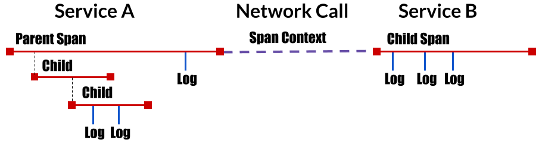
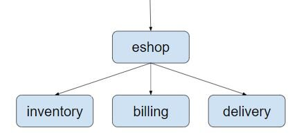
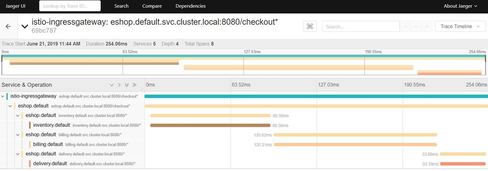
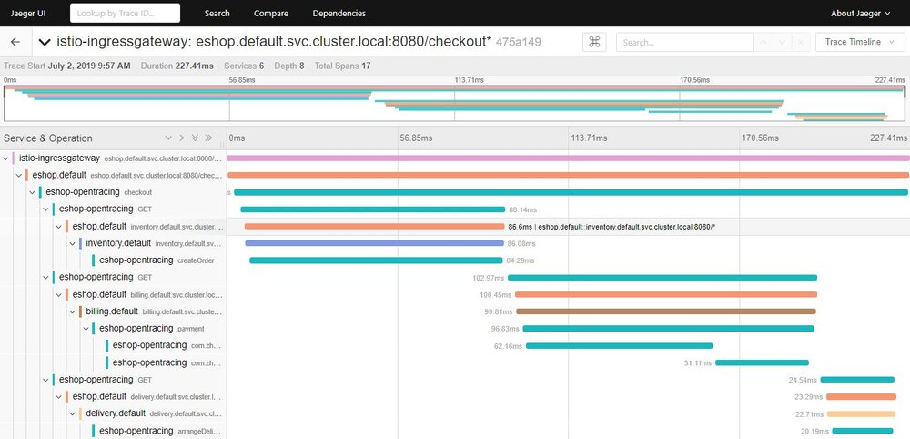
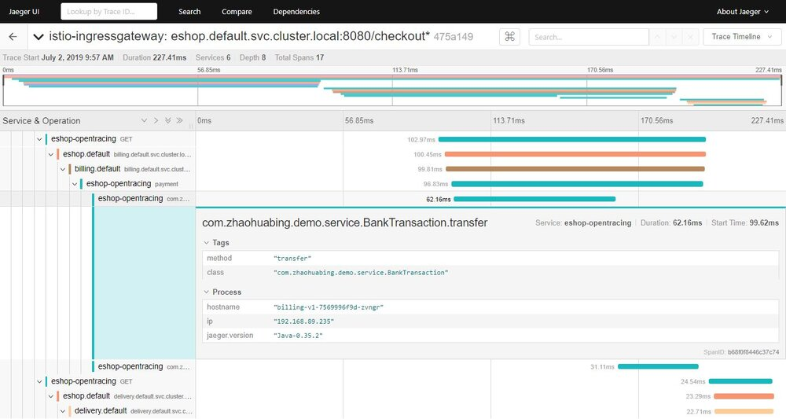
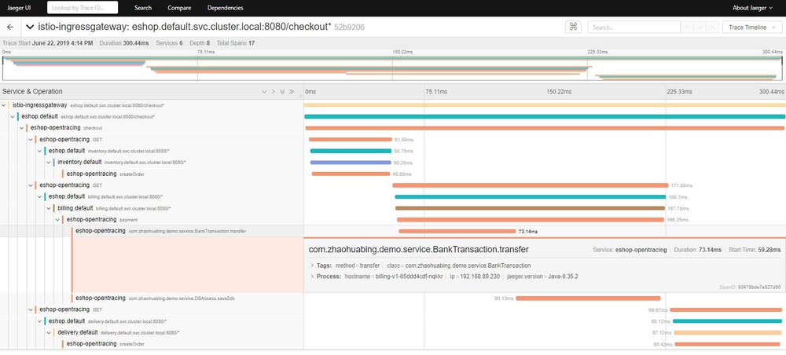

什么是分布式调用跟踪？
相比传统的“巨石”应用，微服务的一个主要变化是将应用中的不同模块拆分为了独立的进程。在微服务架构下，原来进程内的方法调用成为了跨进程的RPC调用。相对于单一进程的方法调用，跨进程调用的调试和故障分析是非常困难的，很难用传统的调试器或者日志打印来对分布式调用进行查看和分析。
如上图所示，一个来自客户端的请求经过了多个微服务进程。如果要对该请求进行分析，则必须将该请求经过的所有服务的相关信息都收集起来并关联在一起，这就是“分布式调用跟踪”。
什么是Opentracing？
CNCF Opentracing项目
Opentracing是CNCF（云原生计算基金会）下的一个项目，其中包含了一套分布式调用跟踪的标准规范，各种语言的API，编程框架和函数库。Opentracing的目的是定义一套分布式调用跟踪的标准，以统一各种分布式调用跟踪的实现。目前已有大量支持Opentracing规范的Tracer实现，包括Jager,Skywalking,LightStep等。在微服务应用中采用Opentracing API实现分布式调用跟踪，可以避免vendor locking，以最小的代价和任意一个兼容Opentracing的基础设施进行对接。
Opentracing概念模型
Opentracing的概念模型参见下图：

如图所示，Opentracing中主要包含下述几个概念：
- Trace： 描述一个分布式系统中的端到端事务，例如来自客户端的一个请求。
- Span：一个具有名称和时间长度的操作，例如一个REST调用或者数据库操作等。Span是分布式调用跟踪的最小跟踪单位，一个Trace由多段Span组成。
- Span context：分布式调用跟踪的上下文信息，包括Trace id，Span id以及其它需要传递到下游服务的内容。一个Opentracing的实现需要将Span context通过某种序列化机制(Wire Protocol)在进程边界上进行传递，以将不同进程中的Span关联到同一个Trace上。这些Wire Protocol可以是基于文本的，例如HTTP header，也可以是二进制协议。
Opentracing数据模型
一个Trace可以看成由多个相互关联的Span组成的有向无环图（DAG图）。下图是一个由8个Span组成的Trace：
[Span A] ←←←(the root span)
|
+------+------+
| |
[Span B] [Span C] ←←←(Span C is a `ChildOf` Span A)
| |
[Span D] +---+-------+
| |
[Span E] [Span F] >>> [Span G] >>> [Span H]
↑
↑
↑
(Span G `FollowsFrom` Span F)
上图的trace也可以按照时间先后顺序表示如下：
––|–––––––|–––––––|–––––––|–––––––|–––––––|–––––––|–––––––|–> time
[Span A···················································]
[Span B··············································]
[Span D··········································]
[Span C········································]
[Span E·······] [Span F··] [Span G··] [Span H··]
Span的数据结构中包含以下内容：
- name: Span所代表的操作名称，例如REST接口对应的资源名称。
- Start timestamp: Span所代表操作的开始时间
- Finish timestamp: Span所代表的操作的的结束时间
- Tags：一系列标签，每个标签由一个key value键值对组成。该标签可以是任何有利于调用分析的信息，例如方法名，URL等。
- SpanContext：用于跨进程边界传递Span相关信息，在进行传递时需要结合一种序列化协议（Wire Protocol）使用。
- References：该Span引用的其它关联Span，主要有两种引用关系，Childof和FollowsFrom。
- Childof： 最常用的一种引用关系，表示Parent Span和Child Span之间存在直接的依赖关系。例PRC服务端Span和RPC客户端Span，或者数据库SQL插入Span和ORM Save动作Span之间的关系。
- FollowsFrom：如果Parent Span并不依赖Child Span的执行结果，则可以用FollowsFrom表示。例如网上商店购物付款后会向用户发一个邮件通知，但无论邮件通知是否发送成功，都不影响付款成功的状态，这种情况则适用于用FollowsFrom表示。
跨进程调用信息传播
SpanContext是Opentracing中一个让人比较迷惑的概念。在Opentracing的概念模型中提到SpanContext用于跨进程边界传递分布式调用的上下文。但实际上Opentracing只定义一个SpanContext的抽象接口，该接口封装了分布式调用中一个Span的相关上下文内容，包括该Span所属的Trace id，Span id以及其它需要传递到downstream服务的信息。SpanContext自身并不能实现跨进程的上下文传递，需要由Tracer（Tracer是一个遵循Opentracing协议的实现，如Jaeger，Skywalking的Tracer）将SpanContext序列化后通过Wire Protocol传递到下一个进程中，然后在下一个进程将SpanContext反序列化，得到相关的上下文信息，以用于生成Child Span。
为了为各种具体实现提供最大的灵活性，Opentracing只是提出了跨进程传递SpanContext的要求，并未规定将SpanContext进行序列化并在网络中传递的具体实现方式。各个不同的Tracer可以根据自己的情况使用不同的Wire Protocol来传递SpanContext。
在基于HTTP协议的分布式调用中，通常会使用HTTP Header来传递SpanContext的内容。常见的Wire Protocol包含Zipkin使用的b3 HTTP header，Jaeger使用的uber-trace-id HTTP Header,LightStep使用的"x-ot-span-context” HTTP Header等。Istio/Envoy支持b3 header和x-ot-span-context header,可以和Zipkin,Jaeger及LightStep对接。其中b3 HTTP header的示例如下：
X-B3-TraceId: 80f198ee56343ba864fe8b2a57d3eff7
X-B3-ParentSpanId: 05e3ac9a4f6e3b90
X-B3-SpanId: e457b5a2e4d86bd1
X-B3-Sampled: 1
Istio对分布式调用跟踪的支持
Istio/Envoy为微服务提供了开箱即用的分布式调用跟踪功能。在安装了Istio和Envoy的微服务系统中，Envoy会拦截服务的入向和出向请求，为微服务的每个调用请求自动生成调用跟踪数据。通过在服务网格中接入一个分布式跟踪的后端系统，例如zipkin或者Jaeger，就可以查看一个分布式请求的详细内容，例如该请求经过了哪些服务，调用了哪个REST接口，每个REST接口所花费的时间等。
需要注意的是，Istio/Envoy虽然在此过程中完成了大部分工作，但还是要求对应用代码进行少量修改：应用代码中需要将收到的上游HTTP请求中的b3 header拷贝到其向下游发起的HTTP请求的header中，以将调用跟踪上下文传递到下游服务。这部分代码不能由Envoy代劳，原因是Envoy并不清楚其代理的服务中的业务逻辑，无法将入向请求和出向请求按照业务逻辑进行关联。这部分代码量虽然不大，但需要对每一处发起HTTP请求的代码都进行修改，非常繁琐而且容易遗漏。当然，可以将发起HTTP请求的代码封装为一个代码库来供业务模块使用，来简化该工作。
下面以一个简单的网上商店示例程序来展示Istio如何提供分布式调用跟踪。该示例程序由eshop,inventory，billing，delivery几个微服务组成，结构如下图所示：

eshop微服务接收来自客户端的请求，然后调用inventory，billing，delivery这几个后端微服务的REST接口来实现用户购买商品的checkout业务逻辑。本例的代码可以从github下载：https://github.com/zhaohuabing/istio-opentracing-demo.git
如下面的代码所示，我们需要在eshop微服务的应用代码中传递b3 HTTP Header。
@RequestMapping(value = "/checkout")
public String checkout(@RequestHeader HttpHeaders headers) {
String result = "";
// Use HTTP GET in this demo. In a real world use case,We should use HTTP POST
// instead.
// The three services are bundled in one jar for simplicity. To make it work,
// define three services in Kubernets.
result += restTemplate.exchange("http://inventory:8080/createOrder", HttpMethod.GET,
new HttpEntity<>(passTracingHeader(headers)), String.class).getBody();
result += "<BR>";
result += restTemplate.exchange("http://billing:8080/payment", HttpMethod.GET,
new HttpEntity<>(passTracingHeader(headers)), String.class).getBody();
result += "<BR>";
result += restTemplate.exchange("http://delivery:8080/arrangeDelivery", HttpMethod.GET,
new HttpEntity<>(passTracingHeader(headers)), String.class).getBody();
return result;
}
private HttpHeaders passTracingHeader(HttpHeaders headers) {
HttpHeaders tracingHeaders = new HttpHeaders();
extractHeader(headers, tracingHeaders, "x-request-id");
extractHeader(headers, tracingHeaders, "x-b3-traceid");
extractHeader(headers, tracingHeaders, "x-b3-spanid");
extractHeader(headers, tracingHeaders, "x-b3-parentspanid");
extractHeader(headers, tracingHeaders, "x-b3-sampled");
extractHeader(headers, tracingHeaders, "x-b3-flags");
extractHeader(headers, tracingHeaders, "x-ot-span-context");
return tracingHeaders;
}
在Kubernets中部署该程序，查看Istio分布式调用跟踪的效果。
- 首先部署Kubernets cluster，注意需要启用API Server的Webhook选项
- 在Kubernets cluster中部署Istio，并且启用default namespace的sidecar auto injection
- 在Kubernets cluster中部署eshop应用
git clone https://github.com/zhaohuabing/istio-opentracing-demo.git
cd istio-opentracing-demo
git checkout without-opentracing
kubectl apply -f k8s/eshop.yaml
- 在浏览器中打开地址：http://${NODE_IP}:31380/checkout ，以触发调用eshop示例程序的REST接口。
- 在浏览器中打开Jaeger的界面 http://${NODE_IP}:30088 ，查看生成的分布式调用跟踪信息。
注意:为了能在Kubernets Cluster外部访问到Jaeger的界面，需要修改Istio的缺省安装脚本，为Jaeger Service指定一个NodePort。修改方式参见下面的代码：
apiVersion: v1
kind: Service
metadata:
name: jaeger-query
namespace: istio-system
annotations:
labels:
app: jaeger
jaeger-infra: jaeger-service
chart: tracing
heritage: Tiller
release: istio
spec:
ports:
- name: query-http
port: 16686
protocol: TCP
targetPort: 16686
nodePort: 30088
type: NodePort
selector:
app: jaeger
Jaeger用图形直观地展示了这次调用的详细信息，可以看到客户端请求从Ingressgateway进入到系统中，然后调用了eshop微服务的checkout接口，checkout调用有三个child span，分别对应到inventory，billing和delivery三个微服务的REST接口。

使用Opentracing来传递分布式跟踪上下文
Opentracing提供了基于Spring的代码埋点，因此我们可以使用Opentracing Spring框架来提供HTTP header的传递，以避免这部分硬编码工作。在Spring中采用Opentracing来传递分布式跟踪上下文非常简单，只需要下述两个步骤：
- 在Maven POM文件中声明相关的依赖，一是对Opentracing Spring Cloud Starter的依赖；另外由于后端接入的是Jaeger，也需要依赖Jaeger的相关jar包。
- 在Spring Application中声明一个Tracer bean。
@Bean
public Tracer jaegerTracer() {
// The following environment variables need to set
// JAEGER_ENDPOINT="http:///{IP}:{PORT}/api/traces"
// JAEGER_PROPAGATION="b3"
// JAEGER_TRACEID_128BIT="true" Use 128bit tracer id to be compatible with the
// trace id generated by istio/envoy
return Configuration.fromEnv("eshop-opentracing").getTracer();
}
注意：
Jaeger tracer缺省使用的是uber-trace-id header,而Istio/Envoy不支持该header。因此需要指定Jaeger tracer使用b3 header格式，以和Istio/Envoy兼容。
Jaeger tracer缺省使用64 bit的trace id, 而Istio/Envoy使用了128 bit的trace id。因此需要指定Jaeger tracer使用128 bit的trace id，以和Istio/Envoy生成的trace id兼容。
部署采用Opentracing进行HTTP header传递的程序版本，其调用跟踪信息如下所示：

从上图中可以看到，相比在应用代码中直接传递HTTP header的方式，采用Opentracing进行代码埋点后，相同的调用增加了7个Span，这7个Span是由Opentracing的tracer生成的。虽然我们并没有在代码中显示创建这些Span，但Opentracing的代码埋点会自动为每一个REST请求生成一个Span，并根据调用关系关联起来。
Opentracing生成的这些Span为我们提供了更详细的分布式调用跟踪信息，从这些信息中可以分析出一个HTTP调用从客户端应用代码发起请求，到经过客户端的Envoy，再到服务端的Envoy，最后到服务端接受到请求各个步骤的耗时情况。从图中可以看到，Envoy转发的耗时在1毫秒左右，相对于业务代码的处理时长非常短，对这个应用而言，Envoy的处理和转发对于业务请求的处理效率基本没有影响。
在Istio调用跟踪链中加入方法级的调用跟踪信息
Istio/Envoy提供了跨服务边界的调用链信息，在大部分情况下，服务粒度的调用链信息对于系统性能和故障分析已经足够。但对于某些服务，需要采用更细粒度的调用信息来进行分析，例如一个REST请求内部的业务逻辑和数据库访问分别的耗时情况。在这种情况下，我们需要在服务代码中进行埋点，并将服务代码中上报的调用跟踪数据和Envoy生成的调用跟踪数据进行关联，以统一呈现Envoy和服务代码中生成的调用数据。
在方法中增加调用跟踪的代码是类似的，因此我们用AOP + Annotation的方式实现，以简化代码。 首先定义一个Traced注解和对应的AOP实现逻辑：
@Retention(RetentionPolicy.RUNTIME)
@Target(ElementType.METHOD)
@Documented
public @interface Traced {
}
@Aspect
@Component
public class TracingAspect {
@Autowired
Tracer tracer;
@Around("@annotation(com.zhaohuabing.demo.instrument.Traced)")
public Object aroundAdvice(ProceedingJoinPoint jp) throws Throwable {
String class_name = jp.getTarget().getClass().getName();
String method_name = jp.getSignature().getName();
Span span = tracer.buildSpan(class_name + "." + method_name).withTag("class", class_name)
.withTag("method", method_name).start();
Object result = jp.proceed();
span.finish();
return result;
}
}
然后在需要进行调用跟踪的方法上加上Traced注解：
@Component
public class DBAccess {
@Traced
public void save2db() {
try {
Thread.sleep((long) (Math.random() * 100));
} catch (InterruptedException e) {
e.printStackTrace();
}
}
}
@Component
public class BankTransaction {
@Traced
public void transfer() {
try {
Thread.sleep((long) (Math.random() * 100));
} catch (InterruptedException e) {
e.printStackTrace();
}
}
}
demo程序的master branch已经加入了方法级代码跟踪，可以直接部署。
git checkout master
kubectl apply -f k8s/eshop.yaml
效果如下图所示，可以看到trace中增加了transfer和save2db两个方法级的Span。

可以打开一个方法的Span，查看详细信息，包括Java类名和调用的方法名等，在AOP代码中还可以根据需要添加出现异常时的异常堆栈等信息。

总结
Istio/Envoy为微服务应用提供了分布式调用跟踪功能，提高了服务调用的可见性。我们可以使用Opentracing来代替应用硬编码，以传递分布式跟踪的相关http header；还可以通过Opentracing将方法级的调用信息加入到Istio/Envoy缺省提供的调用链跟踪信息中，以提供更细粒度的调用跟踪信息。
下一步
除了同步调用之外，异步消息也是微服务架构中常见的一种通信方式。在下一篇文章中，我将继续利用eshop demo程序来探讨如何通过Opentracing将Kafka异步消息也纳入到Istio的分布式调用跟踪中。